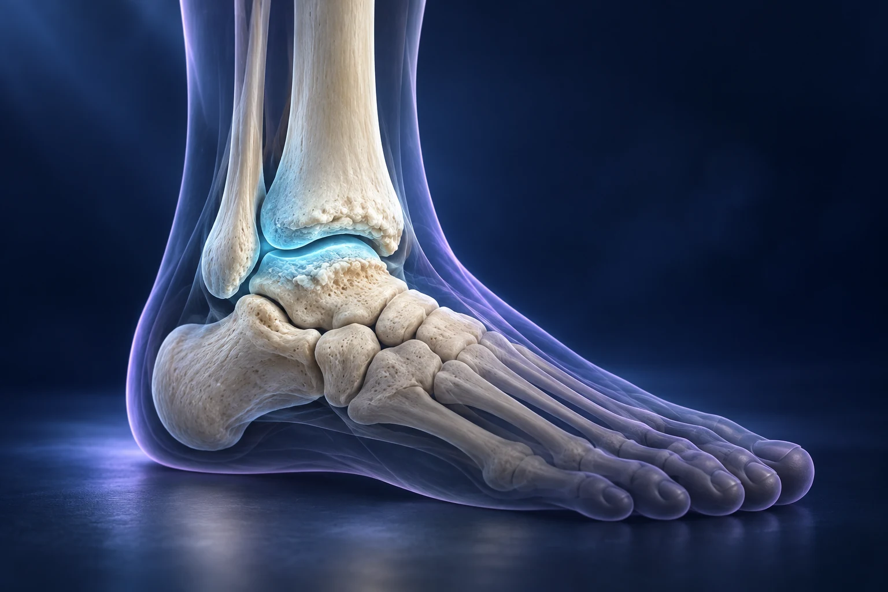

Arthrose de cheville : arthrodèse ou prothèse ?

Lorsque l’arthrose de cheville devient très gênante malgré les traitements non chirurgicaux, deux grandes options peuvent être discutées : l’arthrodèse, qui supprime le mouvement de l’articulation malade, et la prothèse, qui remplace ses surfaces en conservant une certaine mobilité. Le choix dépend de votre cheville, de votre état de santé et de vos activités. Aucune de ces interventions n’est la meilleure dans toutes les situations.
Pourquoi la cheville devient-elle douloureuse ?
Le cartilage permet aux surfaces articulaires de glisser. L’arthrose altère ce revêtement et peut s’accompagner de raideur, de gonflement et de douleur. À la cheville, une ancienne fracture ou des traumatismes peuvent participer à son apparition. L’intensité de la gêne n’est pas déduite d’une radiographie seule : l’examen et vos limitations quotidiennes restent essentiels. AAOS, arthrose du pied et de la cheville.
Pour décrire votre situation, pensez à des scènes précises : descendre une pente, rester debout au travail, marcher sur le sable ou terminer une promenade. Expliquez aussi ce qui vous soulage. Ces informations permettent de formuler un objectif concret, plutôt qu’une attente générale de « retrouver une cheville neuve ».
Que peut-on essayer avant une opération ?
L’adaptation des activités, du chaussage ou des aides à la marche, les orthèses et certains traitements de la douleur peuvent diminuer les symptômes. La rééducation peut également contribuer à entretenir les capacités disponibles. Ces mesures ne reconstituent pas un cartilage usé, mais leur utilité se juge sur votre confort et votre fonction. Royal National Orthopaedic Hospital, comprendre l’arthrose de cheville.
Avant de conclure qu’un traitement a échoué, précisez ce qui a réellement été essayé et pendant quelle période. Une chaussure conseillée mais impossible à porter au travail n’est pas une solution adaptée à votre quotidien. La consultation sert aussi à identifier ces obstacles et à rechercher des ajustements réalistes.
Que signifie « bloquer » la cheville ?
L’arthrodèse vise à faire fusionner le tibia et le talus dans une position déterminée. Les surfaces articulaires sont préparées puis maintenues par une fixation, le temps de la consolidation osseuse. L’objectif est de diminuer les douleurs liées au mouvement de l’articulation arthrosique. Ce mouvement est volontairement supprimé ; les autres articulations du pied conservent leur rôle. AAOS, principes de l’arthrodèse.
L’image d’une charnière douloureuse que l’on stabilise aide à comprendre ce compromis. Elle ne signifie pas que tout le pied devient immobile ni que la marche devient impossible. En revanche, certaines adaptations sont nécessaires, et les articulations voisines peuvent être davantage sollicitées. Le terrain, les chaussures et la mobilité restante du pied comptent dans le résultat fonctionnel. Royal National Orthopaedic Hospital, choix entre fusion et remplacement.
Que peut apporter une prothèse de cheville ?
La prothèse remplace les surfaces abîmées par des composants articulaires. Elle cherche à réduire la douleur tout en préservant du mouvement. Elle ne restitue pas automatiquement l’amplitude d’une cheville saine et n’autorise pas toutes les contraintes sportives. L’état des os, de la peau, de la circulation, des ligaments et l’alignement du membre influencent la possibilité de cette intervention. Royal Orthopaedic Hospital, prothèse de cheville.
Comme tout implant, une prothèse nécessite une surveillance et peut s’user ou se desceller. Une nouvelle intervention peut devenir nécessaire. L’intérêt de conserver du mouvement doit donc être mis en balance avec les contraintes de suivi et les risques propres au remplacement articulaire. Royal Orthopaedic Hospital, bénéfices et limites du remplacement.
Comment choisir avec le chirurgien ?
La bonne discussion commence par vos priorités. Cherchez-vous principalement à marcher davantage, à travailler debout ou à réduire une douleur présente à chaque pas ? Demandez ensuite quelles caractéristiques de votre cheville rendent une option préférable. Il est utile de faire expliquer les alternatives sur vos propres radiographies.
Vous pouvez préparer quatre questions : quel bénéfice est raisonnablement attendu ; quelle mobilité restera ; quelles activités demanderont une adaptation ; quelles solutions seront possibles si le résultat est insuffisant ? Cette discussion ne doit pas se réduire à opposer une technique « ancienne » à une technique « moderne ». Ce sont les compromis adaptés à votre situation qui comptent.
Comment préparer les suites ?
La protection, l’appui et la reprise de la marche dépendent du geste réalisé et des contrôles. Après une arthrodèse, la consolidation doit notamment être surveillée. Les complications possibles comprennent une infection, un problème de cicatrisation ou de consolidation, des troubles sensitifs et une persistance des douleurs. Leurs conséquences et leur prévention sont expliquées avant l’intervention. Royal National Orthopaedic Hospital, suites et risques.
Préparez le logement, les transports et l’aide disponible. Demandez les consignes écrites d’appui et les coordonnées à utiliser en cas de problème. La date de reprise du travail dépend autant de vos tâches que du nom de l’opération : un poste assis et un travail sur terrain irrégulier ne posent pas les mêmes exigences.
Pour discuter de votre situation, vous pouvez consulter le Dr François Lozach à Sète avec vos examens et la liste des traitements déjà essayés.
Ces conseils sont d’ordre général et ne remplacent pas un avis médical personnalisé.